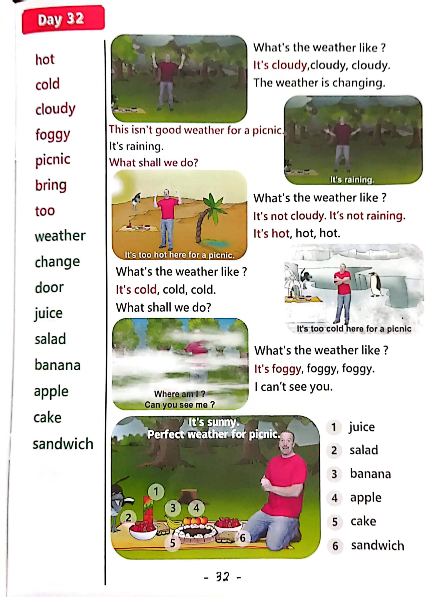

Day 32
Unit 9 · story
教材重点
教材重点依据网盘文件“第三级红色每日打卡全.pdf”，PDF 第 34 页对应 Day 32；以原图为准，避免对图片文字做不可靠的自动识别。
网盘教材重点原图 · PDF 第 34 页对应 Day 32

Unit 9 · story · 5–6岁
hot · cold · like · hello
Hello, hello, hello, hello, everyone. Hello. Hello.
台词本为机器转写，可能存在识别误差；不等同于视频逐字原声。
详细内容
Part 1 核心词汇
必须掌握 · 4 个Part 2 跟读句型与句型拓展
左侧保留台词本原句，右侧为替换练习；拓展内容不是视频逐字台词。
Hello, hello, hello, hello, everyone. Hello. Hello.
Everyone, hello. Hello.
Everyone say, hello. Everyone.
It's hot, it's cold, it's cloudy.
Boggyo, thanks, maggie, what a fantastic.
Part 3 台词本全文
来源：第3级台词本 · 032.Wow!Red - Unit 9 'weather' - part 1 story_9_2.pdf。以下保留网盘 PDF 的机器转写文本，仅清理了文件路径页眉和空行。
Hello, hello, hello, hello, everyone. Hello. Hello.
Everyone, hello. Hello.
Everyone say, hello. Everyone.
It's hot, it's cold, it's cloudy.
It s.
Boggyo, thanks, maggie, what a fantastic.
Picnic, yeah, you can buy sandwiches, tomato salad, oh, apples and bananas. Ho, hey,
Hello, boys and girls, we're having a picnic, and look, we've got something special, nice, big.
Hey, yummy, yummy, hey, what's happening.
The weather's changing really.
Oh, no, you're right, maggie, look, the weather's changing, oh, what's the weather like.
Yeah, it's cloudy. Oh, what's the weather like.
It's cloudy, it's cloudy, it's cloudy, cloudy, cloudy. What's the weather like.
It's cloudy, it's cloudy, it's cloudy, cloudy, cloudy.
Oh, maggie, this isn't good weather for a picnic.
Oh no, no, it's raining. What shall we do?
Magic door and it's not raining in there. Come on, maggie.
And bring the picnic.
Oh,
Wow, it's hot here, hey Maggie, what's the weather like? Well,
It's not raining and it's not cloudy, no, it is.
Very hot, so hey, what's the weather like here?
It's hot.
It's hot, it's hot, hot, hot, what's the weather like it's hot, it's hot, it's hot, hot, hot, hot.
Ooh.
It's too hot here for a picnic. Come on, maggie, we have to go, we need some more money.
Another door come on, then, oh, oh, oh, oh, dear, oh,
This isn't good weather for a picnic, is it?
No,
It's cold here, steve, what's the weather? Like? What's the weather like, say with me, it's cold.
/
-
/3/032.Wow!Red - Unit 9 'weather' - part 1 story_9_2.txt[2022/3/29
星期二
6:47:18]
It's cold, it's cold, cold, cold, it's cold, it's cold, it's cold, cold, cold, oh,
It's too cold here for a picnic, maggie, what shall we do Let's try another dog with a little black game.
Good idea, come on.
Where am I Can you see me Boys and girls,
Oh dear,
It's foggy here, hey, say with me, what's the weather like it's foggy, it's foggy.
It's foggy, foggy, foggy, what's the weather like it's foggy, it's foggy.
It's foggy, foggy, foggy day. What's the weather like.
Maggie, it's foggy. I can't see you. Where are you.
Stay.
Look, the weather's changing, hey, it's sunny.
Perfect weather for picnic.
Oh yes, maggie, but we haven't got a picnic any more.
Oh dear, bye bye, boys and girls, you see you next time, bye bye, silly. Steve.
e